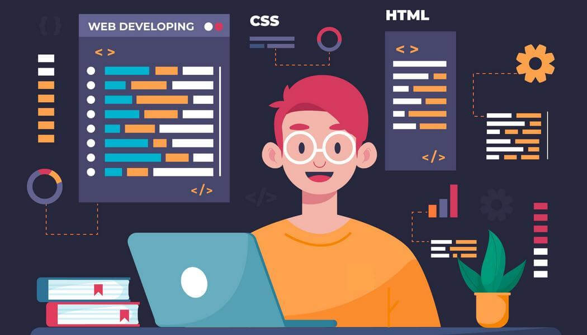

2022 - теперешній час
Бакалавр з комп'ютерних наук
Вивчення сучасних тем у комп'ютерних науках, веб-розробці та проєктуванні систем.
Протягом навчання на програмі з розробки програмного забезпечення я зосередився на базових технологіях для веб-розробки та роботи з базами даних. Мої навички охоплюють створення структурованих веб-сторінок, додавання інтерактивності та взаємодії з даними. Зараз я активно працюю над поглибленням знань у JavaScript і вивчаю інші технології, що допоможуть мені стати більш кваліфікованим розробником. Моя практика включає роботу з різними проєктами, де я реалізовував статичні веб-сторінки, працював з базами даних та пробував свої сили в інтеграції серверних технологій. Завдяки цьому я здобув практичний досвід і сформував хорошу базу для подальшого розвитку.
Протягом навчання на програмі з розробки програмного забезпечення я зосередився на базових технологіях для веб-розробки та роботи з базами даних. Мої навички охоплюють створення структурованих веб-сторінок, додавання інтерактивності та взаємодії з даними. Зараз я активно працюю над поглибленням знань у JavaScript і вивчаю інші технології, що допоможуть мені стати більш кваліфікованим розробником. Моя практика включає роботу з різними проєктами, де я реалізовував статичні веб-сторінки, працював з базами даних та пробував свої сили в інтеграції серверних технологій. Завдяки цьому я здобув практичний досвід і сформував хорошу базу для подальшого розвитку.
Вивчення сучасних тем у комп'ютерних науках, веб-розробці та проєктуванні систем.
Отримав базовий сертифікат з Python для початківців, який охоплює синтаксис, цикли та роботу з функціями.
Створив простий веб-сайт для себе з використанням HTML та CSS.
Освоїв базові команди Git для контролю версій та роботи з репозиторіями.
Пошта: kozakmaxim0@gmail.com
Телефон: +380666894638
Instagram: instagram.com/last.devourer
GitHub: github.com/lastdevourer